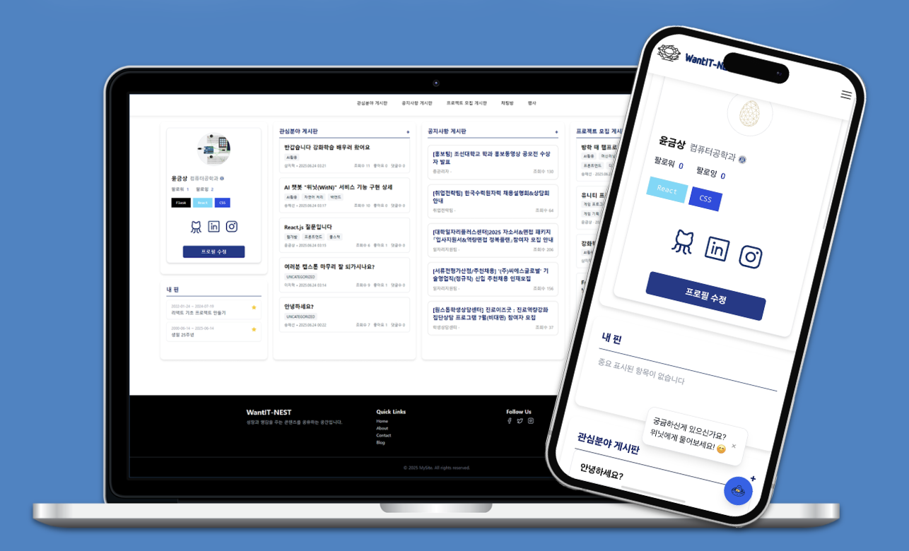

Skills
HTML
CSS
JavaScript
Java
Node.js
Python
SpringBoot
MySQL
Docker
AWS
GCP
MCP
Pytorch
Numpy
Pandas
Git
Github
n8n
Zapier
Certificates
- Engineer Information Processing
- TOPCIT | Lv4
- PCCE | Lv2
History
2025
2025 WFK ICT Volunteers | Daffodil International University, Bangladesh
Industry-Academia Capstone Design [Dungji] Team Leader
Programming Tutor (Coding Clinic Assistant)
Completed [Inflearn] Spring Introduction
2024
Harmonics 35th Regular Performance
Joint Performance of Arts & Culture Division Bands
2024 WFK ICT Volunteers | Mahendra Secondary School, Nepal
Harmonics Regular Busking
Club Union Promotion & Festival
2023
Harmonics 34th Regular Performance
Chosun University Student Council Festival
Club Union Band Joint Performance
2023 WFK ICT Volunteers | Union of the Mongol writers, Mongolia
[NHN] Java Study Participation
C++ Console Game Development Project
Projects

Want IT Nest - Web Community
Planning & Design: Led the planning of core features, database design, and UI prototyping. Designed the layout and UX for key screens, including the main page, user profiles, and community boards.
Backend Development: Developed CRUD APIs for the project board using Node.js. Set up a reverse proxy with NginX and implemented SSL/TLS for secure communication.
Cloud Infrastructure: Designed and deployed the entire infrastructure on AWS, including VPC, EC2, and security groups. Configured a Bastion Host to enhance security.